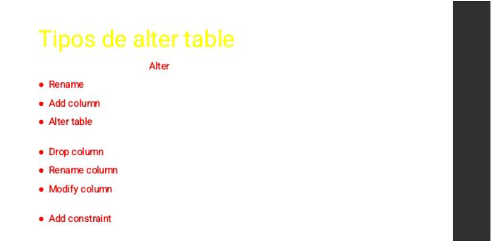

Modificar y Eliminar Tablas
En SQL, los comandos ALTER TABLE y DROP TABLE permiten modificar la estructura de las tablas existentes o eliminarlas completamente. Son herramientas poderosas que deben usarse con precaución, ya que pueden afectar los datos almacenados.
Tipos de ALTER TABLE
| Comando | Descripción | Ejemplo |
|---|---|---|
| RENAME | Cambia el nombre de una tabla. | ALTER TABLE alumnos RENAME TO estudiantes; |
| ADD COLUMN | Agrega una nueva columna a la tabla. | ALTER TABLE alumnos ADD edad INT; |
| DROP COLUMN | Elimina una columna existente. | ALTER TABLE alumnos DROP COLUMN telefono; |
| RENAME COLUMN | Cambia el nombre de una columna. | ALTER TABLE alumnos RENAME COLUMN nombre TO nombre_completo; |
| MODIFY COLUMN | Modifica el tipo de dato o propiedades de una columna. | ALTER TABLE alumnos MODIFY edad SMALLINT; |
| ADD CONSTRAINT | Agrega una restricción como PRIMARY KEY o FOREIGN KEY. | ALTER TABLE alumnos ADD CONSTRAINT pk_alumno PRIMARY KEY(id); |
DROP TABLE
El comando DROP TABLE se utiliza para eliminar una tabla y todos sus datos. Una vez ejecutado, la información no puede recuperarse fácilmente.
DROP TABLE alumnos;
Recomendaciones
- Haz una copia de seguridad antes de eliminar o modificar tablas.
- Verifica las relaciones con otras tablas antes de usar DROP.
- Usa ALTER para ajustes estructurales sin perder datos.
- Evita modificar columnas que sean claves primarias o foráneas sin revisar dependencias.
